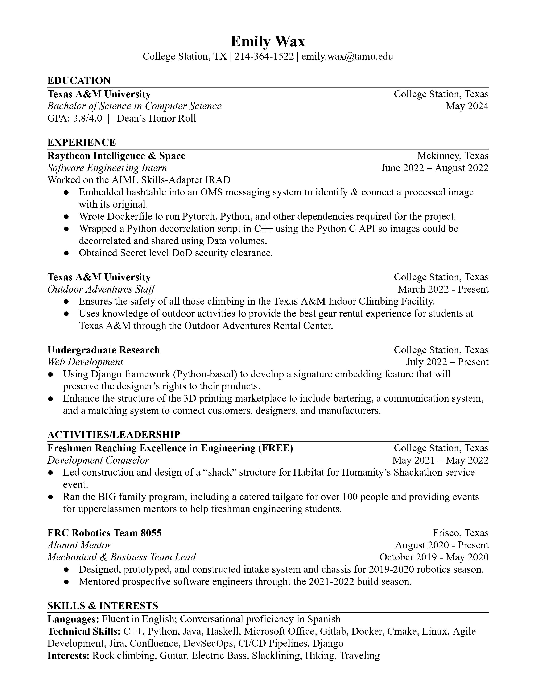

Qualifications & Technical Experience
Through my coursework and work experience I've been fortunate to gain a wide variety of skills that I believe would make me a
valuable asset to any company. The first of many prevalent ways I've been able to gain experience is through employment.
Summer of
2022 I worked at
Raytheon Intelligence & Space as a software engineering
intern. I worked with one other intern and a team of
Department 22 software engineers on an Internal Research & Development Project
(IRAD) that focused on adapting an AI platform that could denoise images in specific ways based on consumer input. Although I
did not work directly on the denoising algorithm, I got exposure to that process and learned a lot of other valuable industry skills.
I made many tangible contributions to the project, the first of which being an embedded hashtable that used metadata and UUIDs to connect
denoised images with their original versions. I also wrote a Dockerfile that created an environment with Pytorch, Python, and other
dependencies. One of the biggest contributions, however, was a scriipt that used Python-C API to wrap a denoising script. Although the
actual algorithm was run using Python, the framework of the system was written in C++. By the end of the summer, I had written a script that
allowed the whole denoising process to run using Python and a data mount between containers. Other skills picked up during this internship
were DevOps tools, Gitlab, and CI/CD pipelines.
The other part of my techincal experience I would like to highlight is one that is no longer displayed on my resume. That is working as a
summer camp counselor at
Camp Champions during Summer of 2020 & 2021. Although from a
programming perspective this may not immediately seem beneficial, I would say that I gained many many invaluable skills during my time working.
One of the biggest takeaways from working as a camp counselor was the ability to work in a team and solve conflict. During the day,
I would work with my colleagues at either the ropes course or climbing wall to supervise 30+ kids at a time and ensure their safety. When
activities finished, I would working with my co-counselor to plan activities for the kids, whether it be after dinner events or a
nightly bonding activity. My conflict resolution activities were put to the test every day. At times, kids can act a little rebellious towards
you or even their fellow cabinmates. As a counselor, I felt I could excel in my position by resolving conflict in a calming, understanding
manner, turning them into opportunites for growth instead of punishment.
